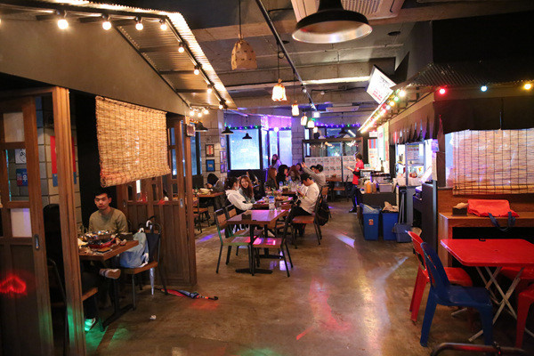

이대역
허니꼬꼬: 박스퀘어 1층에 위치, 사이즈별로 2000~7000원의 저렴한 가격대, 일반 닭강정맛과 허니버터맛 두가지가 있으며 반반 가능
연어초밥: 신촌기차역에서 대로쪽으로 직진하다가 우회전, 만원 초반대의 가격대, 가게 내부가 좁아 대기시간이 있을 때가 있음
프라이드 킹: 핫도그 프렌차이즈점, 감자튀김에 다양한 소스를 선택해서 뿌릴 수 있음, 매우 높은 칼로리가 예상됨
영등포구청역
토끼네 부엌: 살찔까봐 한번도 안가봤지만 예전에 검색하다가 알아본 봐로는 맛있다고 들었음
신촌역
찬수씨 싼술을 부탁해: 친구들이랑 술마시면 항상 2차로 여기가자고 함, 소주 1병에 1900원, 대신 안주가 비쌈, 만원 후반~2만원대, 순살 후라이드가 맛있음

건대입구역
건대곱창: